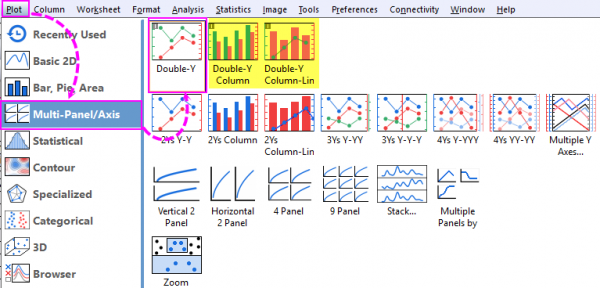
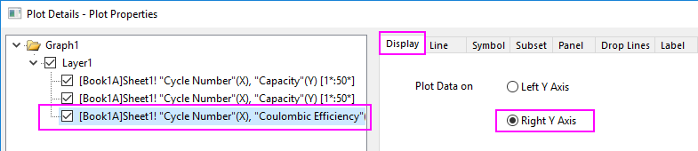

FAQ-194 Wie kann ich ein Diagramm mit doppelter Y-Achse erstellen?
Create-Double-Y
Letztes Update: 07.12.2022
Doppeltes Y aus Arbeitsblatt zeichnen
- Wählen Sie im Arbeitsblatt die Y-Spalten, die Sie zeichnen möchten, aus. Bitte stellen Sie sicher dass alle X-Spalten, falls existent, auf X gesetzt wurden.
- Wählen Sie Zeichnen: Mehrere Felder/Achsen: Doppeltes Y.
- Wenn Sie den Diagrammtyp ändern möchten: Klicken Sie nach Aktivierung eines jeweiligen Layers auf die Schaltfläche Liniendiagramm, Punktdiagramm, Punkt-Liniendiagramm oder Säulendiagramm, um den Diagrammtyp im Layer zu ändern.
Hinweis: Ein Diagramm mit doppeltem Y mit einer Säule und einer Linie oder mit zwei Säulen kann direkt über das Menü Zeichnen gezeichnet werden.
- 
 |
Der Mechanismus des Diagramms mit doppelter Y-Achse in einem einzelnen Layer, der in Origin 2023 eingeführt wurde, macht es einfach, ein Diagramm mit einzelner, vertikaler Achse in ein Diagramm mit doppeltem Y umzuwandeln. Dazu wird die Objektverwaltung verwendet:
- Klicken Sie auf das Zeichnungssymbol in der Objektverwaltung.
- Klicken Sie auf der angezeigten Minisymbolleiste auf Auf rechter Y zeichnen. Dies fügt eine rechte Y-Skalierung zur Grafik hinzu und zeichnet die markierten Daten gegen diese Skala.

- Alternativ können Sie (a) mit der rechten Maustaste auf ein Zeichnungssymbol klicken und auf rechter Y zeichnen im Kontextmenü wählen, oder (b) Details Zeichnung öffnen, die gewünschte Zeichnung im linken Bedienfeld markieren und dann auf der Registerkarte Anzeige rechts die Option Rechte Y-Achse festlegen.
|
Neue Daten zur rechten Y-Achse eines existierenden Diagramms hinzufügen
- Zuerst müssen wir die neuen Daten zum aktuellen Diagrammlayer hinzuzufügen. Es gibt drei Möglichkeiten:
- Gehen Sie zum Arbeitsblattfenster und markieren Sie den zweiten Datensatz. Kehren Sie zum Diagrammfenster zurück und wählen Sie Einfügen: Zeichnung in Layer: Diagrammtyp.
- Optional können Sie die gewünschten Daten markieren und mit der Maus aus dem Arbeitsblatt ziehen und im Diagrammlayer fallen lassen.
- Alternativ können Sie oben links im Diagramm doppelt auf das Symbol von Layer 1 klicken. In dem Dialog Layerinhalt können Sie Daten zum Layer hinzufügen oder aus ihm entfernen.
- Klicken Sie zum Öffnen des Dialogs Details Zeichnung doppelt auf das soeben erstellte Diagramm. Gehen Sie, wenn dieses neu hinzugefügte Diagramm im linken Bedienfeld ausgewählt ist, zur Registerkarte Anzeige, setzen Sie Daten zeichnen auf auf Rechte Y-Achse und klicken Sie auf OK, um den Dialog zu schließen. Sie werden sehen, dass die rechte Y-Achse angezeigt und neu skaliert wird, um sich dem Datenbereich der zweiten Zeichnung anzupassen.
- 
- Sie können die Minisymbolleiste verwenden, um den Stil der Zeichnungen benutzerdefiniert anzupassen.
|
Die Anweisungen oben beziehen sich alle auf das Diagramm mit doppeltem Y im gleichen Layer. Sie können über das Menü Zeichnen auch direkt ein Diagramm mit 2 Y, Y-Y zeichnen, das zwei Layer enthält.
|
Schlüsselwörter:zweite, zwei, doppelte Y-Achse, mehrere Y-Achsen, Achse verknüpfen